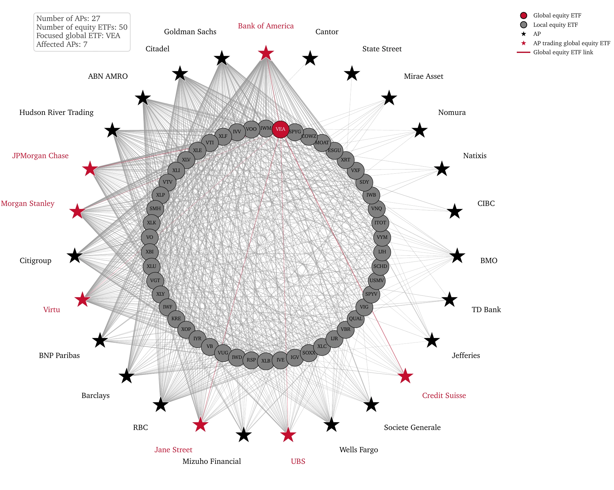
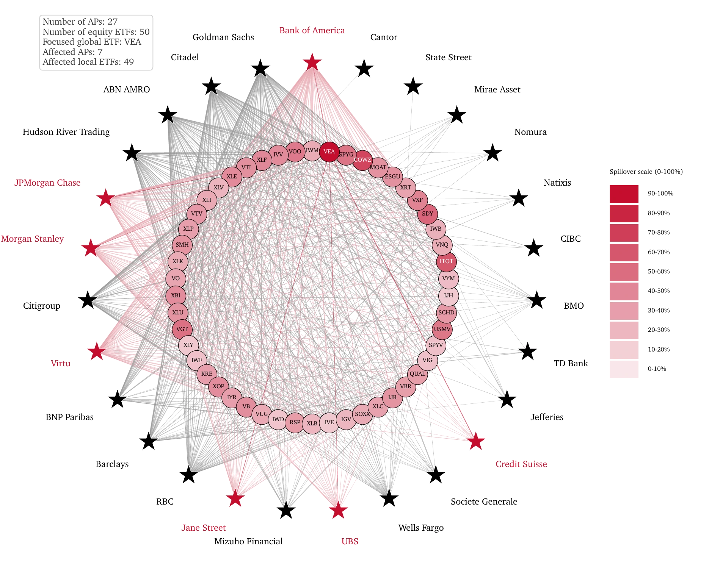
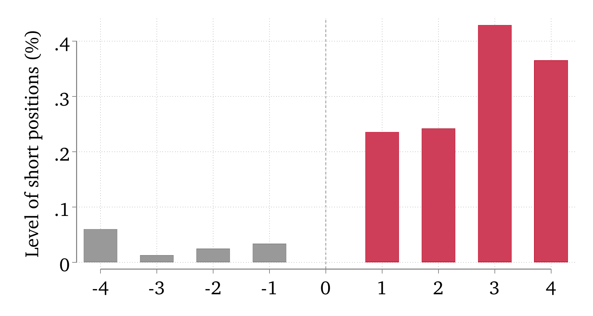
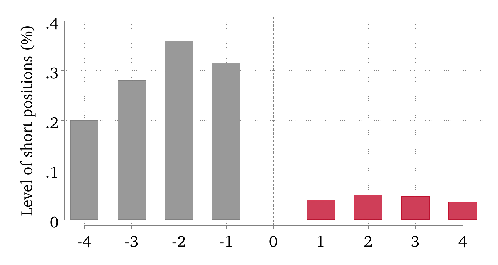
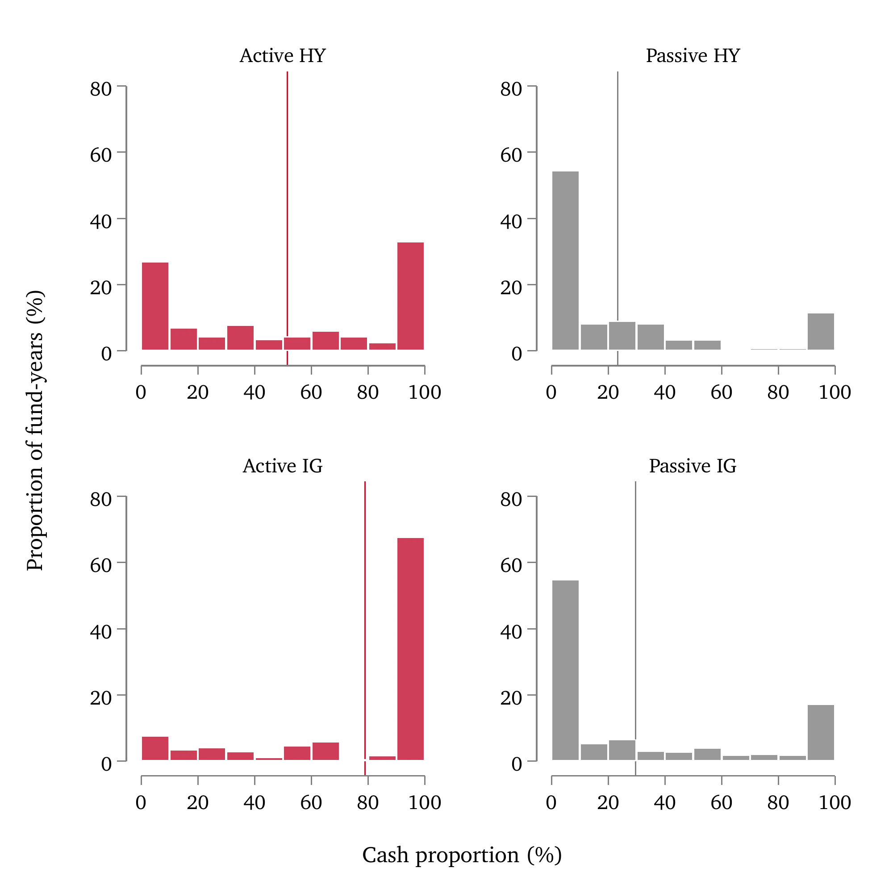
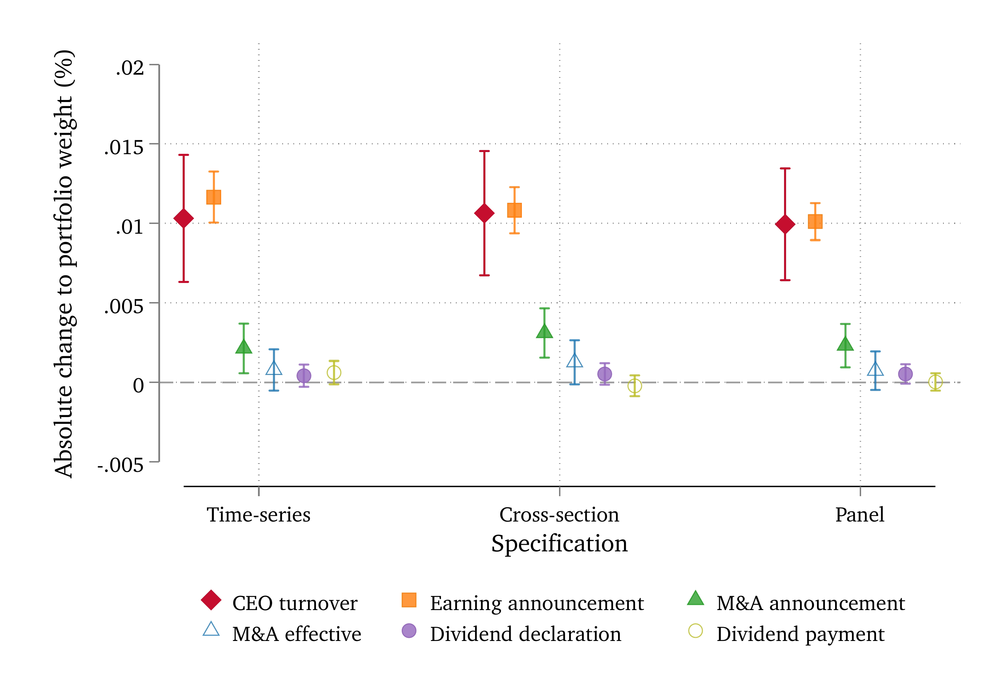

Yuet Chau
PhD Candidate in Finance · Hong Kong University of Science and Technology
Hi, I am on the 2026/27 academic job market.
My research examines how market frictions and market forces shape financial intermediation, with a focus on ETFs, mutual funds, and market efficiency. My job market paper studies how arbitrage constraints propagate through networks of shared intermediaries.
Job Market Paper
Abstract
One-figure summary
This figure shows how arbitrage frictions spill over from global ETFs through shared authorized participants to otherwise unexposed domestic ETFs.

Panel A: Arbitrage becomes costly for a focal global-equity ETF (VEA).

Panel B: Arbitrage frictions propagate through the AP network.
Working Papers
Abstract
One-figure summary
This figure shows that short positions in a fund rise when an underperforming manager joins and fall when an outperforming or new manager joins.

Panel A: Short positions of funds joined by bad managers.

Panel B: Short positions of funds joined by good or new managers.
Abstract
One-figure summary
This figure shows that active ETFs include a surprisingly high proportion of cash in their creation baskets.

Abstract
One-figure summary
This figure shows that mutual funds change portfolio weights much more around CEO turnovers than around M&A and dividend events, with changes comparable in magnitude to those around earnings announcements.
